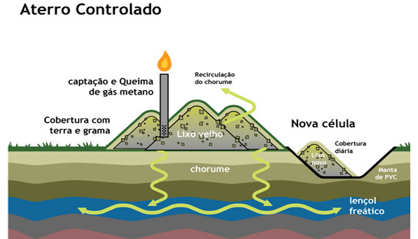

Manter a nossa cidade limpa é uma responsabilidade de todos nós. Para isso, devemos realizar corretamente o descarte dos resíduos (lixo), em seus devidos locais e separados de acordo com sua característica. Vamos ver a seguir alguns passos e dicas para que o descarte seja feito de forma correta, respeitando o meio ambiente. Basicamente todos os materiais feitos de plástico, vidro, papel seco e metal são reaproveitados. Entre eles, embalagens longa vida, arame, baldes, brinquedos, caixas em geral, caixa de pizza sem gordura, canos e tubos metálicos, PVC, cobre, copos descartáveis, garrafas pet, borracha, etc. Aqui podemos ver um pouco mais sobre os materiais e suas classificações:
Em primeiro lugar é essencial saber que os conhecidos e tão utilizados lixões são completamente errados. Eles são locais onde o lixo é simplesmente jogado sem o menor cuidado com o meio ambiente e pior, adultos e até crianças entram livremente, se arriscando a contrair uma série de doenças, para catar resíduos que possam ser reciclados.
Diversos Estados estão tomando providências para que seus municípios se adequem encontrando outras formas de destinação para os resíduos, mas ainda falta muito. Aqui podemos ver algumas dessas regras sobre como e onde fazer o descarte:
Regras de Descarte de Resíduos
A Coleta Seletiva, desde setembro de 2015, é realizada em 100% das ruas que comportam a entrada de caminhões pelo menos duas vezes por semana. Ocorre três vezes por semana no Centro Histórico e nos bairros atendidos pela Coleta Automatizada. São atendidos três vezes por semana a totalidade dos bairros Independência, Bom Fim, Farroupilha, Cidade Baixa, Auxiliadora, Mont’Serrat, Bela Vista, Moinhos de Vento, Rio Branco e Praia de Belas; e parte dos bairros Floresta, Santa Cecília, Santana, Azenha, São João, Higienópolis, Petrópolis e Menino Deus também tem o serviço três vezes por semana.
Recolhe resíduos recicláveis e reaproveitáveis como papel seco, papelão, latas de alumínio, isopor, plásticos, metais, vidros e embalagens longa vida. Todo o material recolhido pelos caminhões da Coleta Seletiva é levado para as Unidades de Triagem conveniadas com o DMLU, gerando emprego e renda para centenas de pessoas, além de beneficiar o ambiente.
Um aterro sanitário é um espaço destinado à deposição final de resíduos sólidos gerados pela atividade humana, são provenientes de residências, indústrias, hospitais, construções e consiste em camadas alternadas de lixo e terra que evita mau cheiro e a proliferação de animais.
Um aterro segue princípios da engenharia de confinar resíduos sólidos à menor área possível e reduzí-los ao menor volume possível, cobrindo-os com uma camada de terra na conclusão da jornada de trabalho ou em intervalos menores, se necessário. Deve ser impermeabilizado e possuir acesso restrito, ter a quantidade de lixo controlada e conhecer que tipos de resíduos estão sendo depositados. Na maioria, os aterros sanitários são construídos em locais afastados das cidades em razão do mau cheiro e da possibilidade de contaminação do solo e das águas subterrâneas.

Essa contaminação pode ocorrer por infiltração do chorume ou percolado, líquido contendo componentes tóxicos que flui do lixo para o solo e corpos d’água.
Atualmente, existem normas que regulam a implantação dos aterros, e uma dessas regras é a implantação de mantas impermeabilizantes que evitem essa infiltração. É necessário também que haja a retirada desse líquido, por sistemas de drenagem eficientes, com posterior tratamento dos efluentes sem que agrida o meio ambiente. Gases também são liberados e podem ser aproveitados como combustíveis, o que pode trazer benefícios financeiros. Outras maneiras ambientalmente mais viáveis são a reciclagem, a compostagem, a reutilização e a redução.
Com a reciclagem, materiais que podem ser reciclados não vão para o aterro.
Abaixo podemos ver um exemplo de como são formados os Aterros: